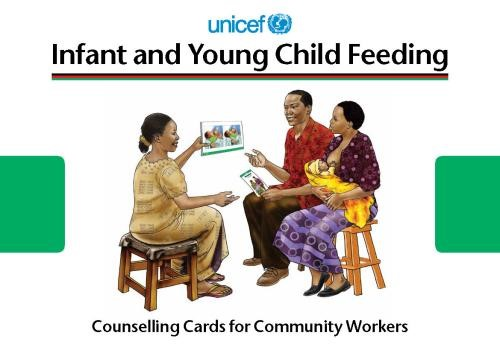

Malnutrition, poor maternal and adolescent nutrition, gender discrimination are major problems which require immediate attention and addressed to as every fourth infant born in India has Low Birth Weight & every second child is malnourished, reflecting inadequate caring practices related to health, hygiene, infant and young child feeding, care of girls and women.ng inadequate caring practices related to health, hygiene, infant and young child feeding, care of girls and women.
According to NFHS-III, in Haryana breastfeeding within one hour was initiated by 22.3% percent of infants and only 17% infants of 0-3 months are exclusively breastfed. Breastfeeding is a critical entry point for ensuring children’s rights to grow and develop to their full potential.d develop to their full potential.In a study conducted by IBFAN, it has been revealed that universal exclusive breastfeeding for the first six months is the single most effective child survival intervention – it reduces under –5 mortality by 13%.
Further, complementary feeding along with breastfeeding upto 2 years prevents deaths by 6%.with breastfeeding upto 2 years prevents deaths by 6%.Position of optimal infant and young child feeding practices is crucial for preventing malnutrition, infant mortality and for promoting integrated early child development for which the scheme for Improving Infant and Young Child Feeding has been sanctioned in the year 2005-06 by the State Govt.One Stop Centres(OSCs) are intended to support women affected by violence, in private and public spaces, within the family, community and at the workplace. Women facing physical, sexual, emotional, psychological and economic abuse, irrespective of age, class, caste, education status, marital status, race and culture will be facilitated with support and redressal.

The World Health Organization (WHO) recommends exclusive breastfeeding for infants from birth until 6 months of age. This means feeding the infant only breast milk, without any additional food or water, unless medically indicated. Breast milk provides all the necessary nutrients, antibodies, and hydration for the baby’s growth and development during this period.
Complementary foods should be introduced at around 6 months of age when the infant’s nutrient needs exceed what is provided by breast milk alone. The first foods should be nutrient-dense, soft, and easy to digest, such as mashed fruits, vegetables, cereals, and protein-rich foods like lentils or meat. It is important to continue breastfeeding alongside these foods.
Key principles include:
Ensuring enough micronutrients can be done through:
It is common for children to refuse new or unfamiliar foods. Strategies include:
While commercial baby foods can be convenient, homemade foods are preferred as they are fresher and more nutrient-dense. If using commercial baby foods, choose those without added sugars, salt, or preservatives, and always check expiration dates and labels.
Infant and Young Child Feeding
This exciting book, edited by Fiona Dykes and Victoria Hall Moran and with a foreword from Gretel Pelto, explores in an integrated context the varied factors associated with infant and child nutrition, including global feeding strategies, cultural factors, issues influencing breastfeeding, and economic and life cycle influences.
READ
Global Strategy for Infant and Young Children Feeding
WHO and UNICEF jointly developed this global strategy to focus world attention on the impact that feeding practices have on the nutritional status, growth and development, health, and thus the very survival of infants and young children.
READ
Guiding Principles for Feeding Infants and Young Children During Emergencies
The guiding principles presented here are intended to serve as a starting point for organizing sustained pragmatic interventions that will ensure appropriate feeding and care for infants and young children at all stages of an organized emergency response.
READ